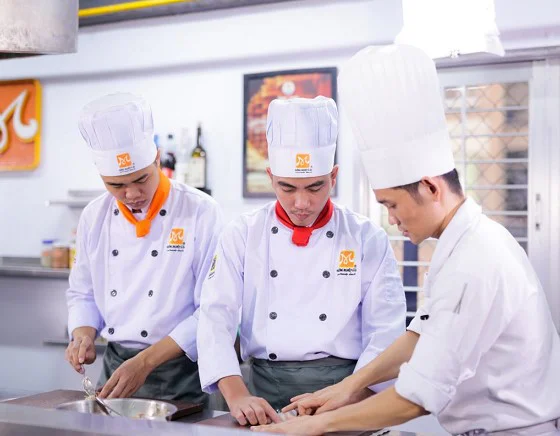
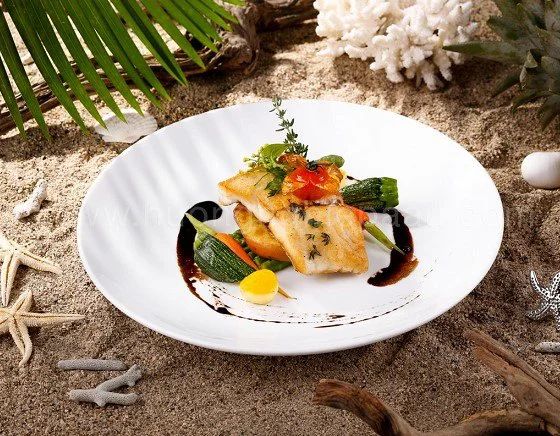
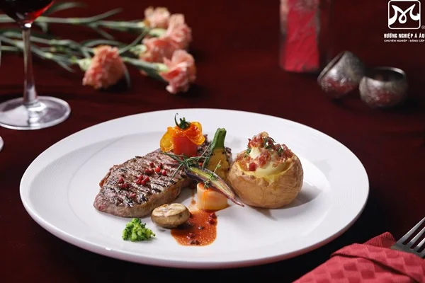
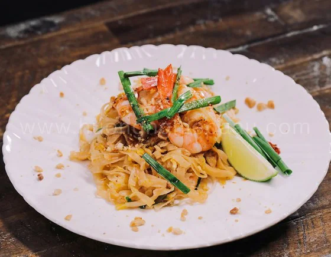
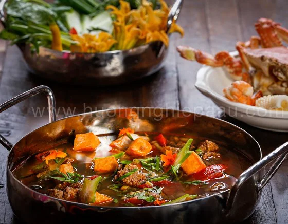
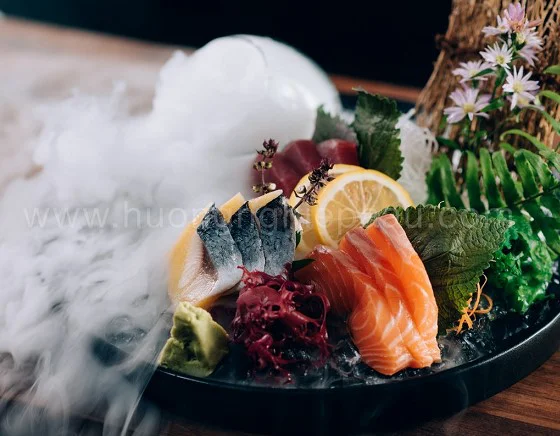
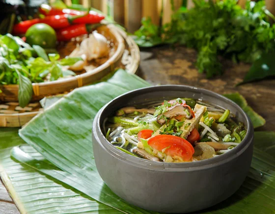
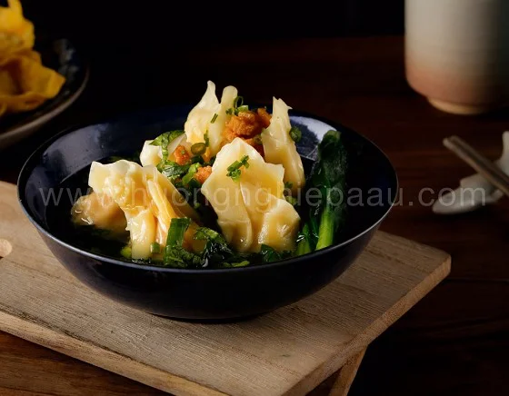
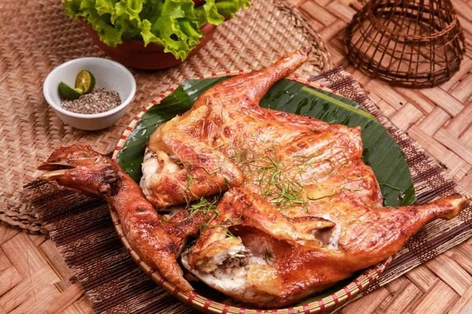

nội dung khoá học nấu ăn
|

Khóa học đào tạo đầu bếp chuyên nghiệp và những ai đang tìm kiếm cơ hội thăng tiến.Nội dung học đa dạng với nhiều nền ẩm thực đan xen. |

Mang đến những kiến thức và kỹ năng thực tế mà một đầu bếp Âu cần có về chế biến, décor, vận hành bếp… |

Sở hữu chứng chỉ nghề bếp có giá trị quốc tế, nắm trong tay cơ hội làm việc tại các nhà hàng, khách sạn (NHKS) 4 – 5 sao trong và ngoài nước. |
|

Tìm hiểu phong cách chế biến của 6 nền ẩm thực lớn châu Á gồm Nhật, Hàn, Thái, Singapore, Ấn, Hoa. |

Đào tạo đầu bếp chuyên món Việt với các món ăn đa dạng vùng miền và đặc trưng nhất của ẩm thực Việt Nam. |

Học viên sẽ tự tin với kiến thức về nguyên tắc chế biến và phục vụ món Nhật đúng tiêu chuẩn. |
|

Nâng tầm khả năng chế biến món chay đa dạng, khoa học, dinh dưỡng để mở quán hoặc trở thành đầu bếp chuyên nghiệp về món chay. |

Bạn sẽ được khám phá và trải nghiệm nhiều công thức nấu món Hoa truyền thống. Đồng thời, thành thạo các kỹ thuật, phương pháp chế biến ngon của một đầu Bếp món Hoa chuyên nghiệp. |

Các buổi chuyên đề theo món hoặc hình thức học Một thầy – Một trò trong 1 – 3 buổi sẽ giúp người học nắm trọn bí quyết nấu ăn ngon, độc đáo để mở quán kinh doanh. |